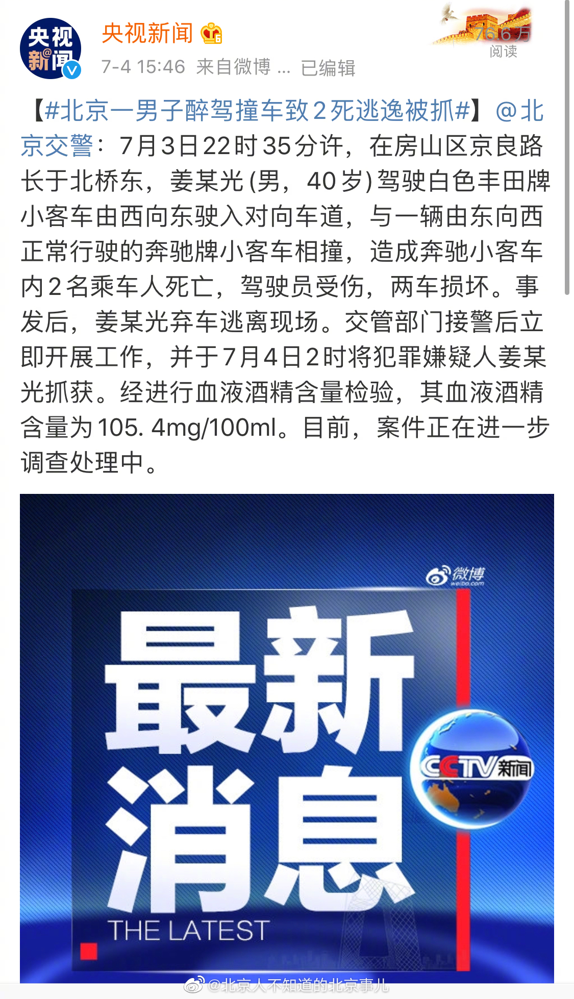
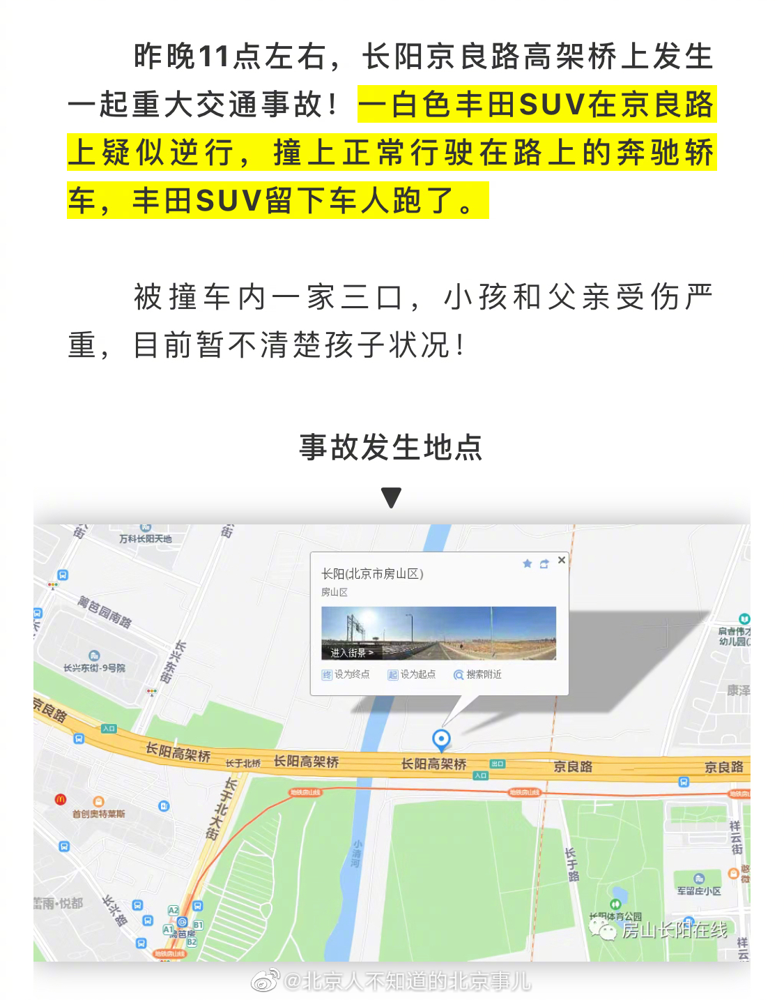
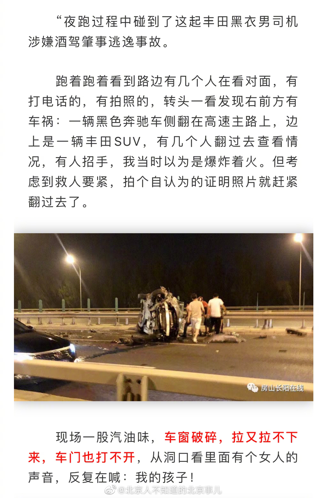
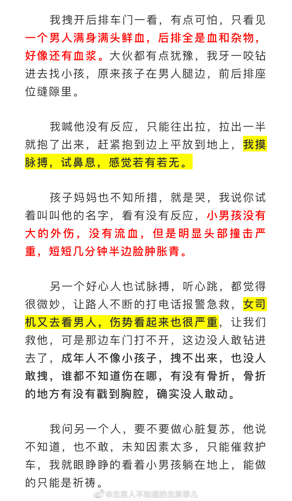

一定要严惩。另外，系安全带。@北京人不知道的北京事儿:昨晚10点半北京房山京良路，一40岁男子酒后驾驶一辆丰田SUV逆行，正面撞上一辆正常行驶的奔驰，车上是一家三口，最终车里的小孩和父亲抢救无效死亡。。。相撞后这男的非但没救人还弃车逃离现场，今天凌晨2点被警方抓获！血液酒精含量105. 4mg/100ml！！这样的畜生不判死刑天理难容！！！#北京一男子醉驾撞车致2死逃逸被抓#
回复@路过秋天的少年:看这段视频前我甚至觉得为了干掉坏人，用一些手段是可以接受的。但她这个态度让我恶心了。//@路过秋天的少年:一个人受欺负了的时候，正义解决不了问题的时候，估计大多数人都会选择非正规途径来解决。除非愿意默默承受被欺负。@想要自由的鲤鱼王:苟晶本人对于夸大其词的回应 承认自己一开始发表的言论确实有夸大其词 ，并表示：你又损失了什么呢？ 你们又损失了什么呢？ 网友表示：请给我们的同情心和正义感一份交代。 你怎么看？苟晶质问那些质疑她的人：你为谁工作？ 那么苟晶此次选择在这个时候站出来发声是否也有背后的因素呢？ #苟晶##被顶替者苟晶怀疑自己早被选中##苟晶表示压力来自想平息事件的人# 8块腹肌的航的微博视频 190万次播放 01:17
“就算我夸大其词了，你又损失了什么，你们又损失了什么。”这个人意识中是没有正义的，只有“利益”。衡量一切的标准就是利益，没有其它。@想要自由的鲤鱼王:苟晶本人对于夸大其词的回应 承认自己一开始发表的言论确实有夸大其词 ，并表示：你又损失了什么呢？ 你们又损失了什么呢？ 网友表示：请给我们的同情心和正义感一份交代。 你怎么看？苟晶质问那些质疑她的人：你为谁工作？ 那么苟晶此次选择在这个时候站出来发声是否也有背后的因素呢？ #苟晶##被顶替者苟晶怀疑自己早被选中##苟晶表示压力来自想平息事件的人# 8块腹肌的航的微博视频 190万次播放 01:17
 。。。相撞后这男的非但没救人还弃车逃离现场，今天凌晨2点被警方抓获！血液酒精含量105. 4mg/100ml！！这样的畜生不判死刑天理难容！！！
。。。相撞后这男的非但没救人还弃车逃离现场，今天凌晨2点被警方抓获！血液酒精含量105. 4mg/100ml！！这样的畜生不判死刑天理难容！！！